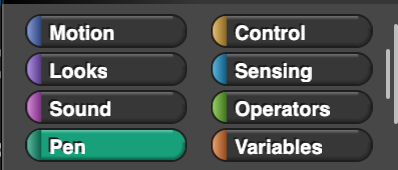

Lesson 1.4.3: Animation - Broadcast and Receive
- What if one sprite wants to effect another sprite?
-
Broadcast Definition
- Sends a message to all the sprites and the stage
- Those sprites will choose to 'hear' or receive certain messages and act on them
- This is useful if you want to tell other sprites when to do something
- Works in conjunction with "When I receive"
-
It lets sprites communicate - this is BIG! - It opens you up to a world of possible uses and code organization
- Also known as a pub / sub pattern (publish / subscribe)
-
Broadcast Example
- I broadcast fly to all sprites. Each sprite that receives fly will start to fly
-
What are real life examples of broacast and receive?
-
- Air-plane Boarding Announcements
- Class Rollcall
- Mom yelling your name - I dont subscribe to that name mom
- Traffic Light
- Television channels
- Where in software have we seen this?
-
- Chatroom messaging
- Podcast subscriptions
- Youtube subscriptions
- Following people on instagram, twitter, etc
- Load balancing - large queue of tasks can be efficiently distributed among multiple workers
- Asynchronous workflows - doing multiple things at the same time - transcoding video
- Thought Experiments
-
- How many subscribers can there be?
-
-
What tool category do you think it falls under?

-
-
What happens if we dont have a recieve block?
-
- Can other elements communicate between sprites?
-
-
What if we recieve a message, then broadcast to that same message?
Demo
-
-
How can we make the bats stay together? We could put the broadcast on the slowest one. Turn on visible stepping
-
-
What if we dont know how long each bat will take?
{kind=link}